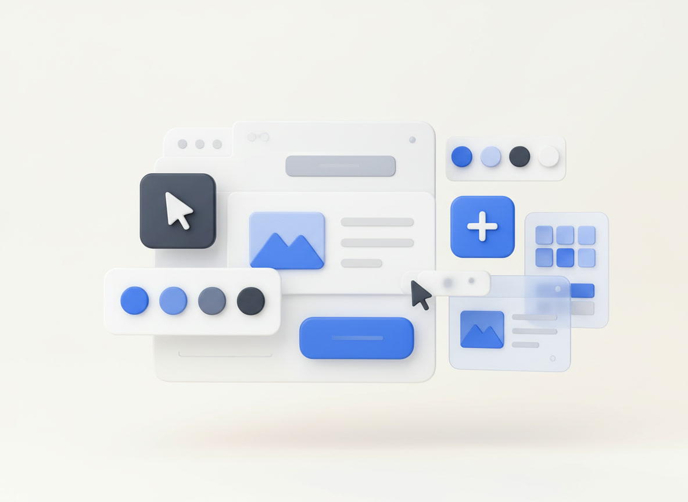
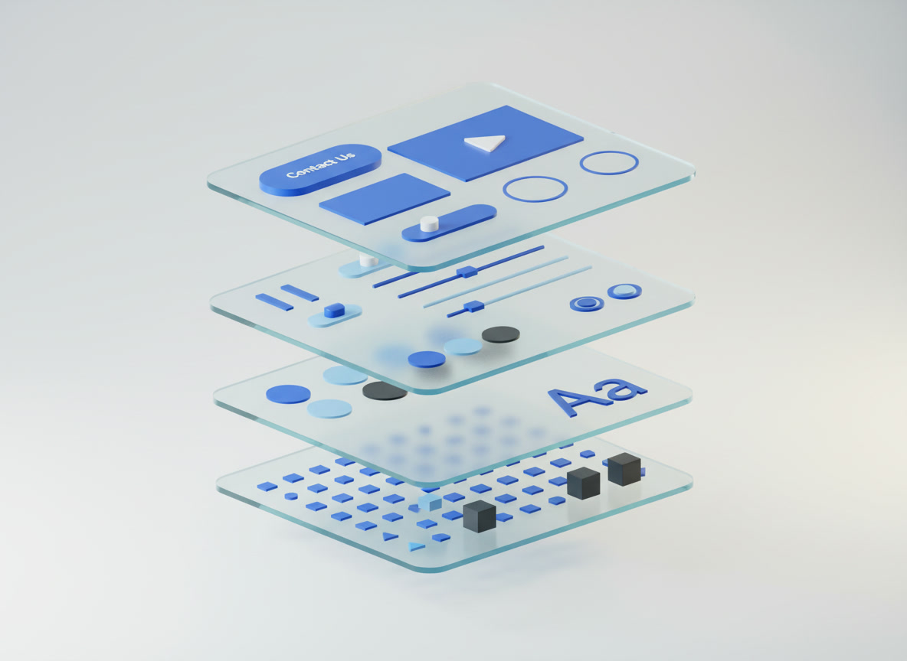

01
Цветовая палитра
Определяет основные и дополнительные цвета интерфейса.
Дизайн‑системы
Визуальный порядок, который помогает продуктам расти.

Представьте цифровой продукт, над которым одновременно работают несколько дизайнеров и разработчиков. Каждый создаёт кнопки, формы, карточки и другие элементы интерфейса самостоятельно. Постепенно появляются различия в цветах, размерах, отступах и поведении элементов. Интерфейс становится неоднородным, а внесение изменений требует всё больше времени.
Именно эту проблему решают дизайн‑системы. Они позволяют создать единый визуальный язык продукта, которым пользуется вся команда. Вместо постоянного создания элементов с нуля специалисты обращаются к общей библиотеке готовых решений.
Поначалу такие расхождения кажутся мелочью. У одной формы чуть больше радиус скругления, у другой кнопки немного иной оттенок синего. Но чем больше становится экранов, тем заметнее цена этих небольших решений. Пользователь видит продукт целиком и ожидает, что одинаковые действия будут выглядеть и работать одинаково. Когда привычная кнопка внезапно меняет цвет или расположение, ему приходится заново разбираться в интерфейсе.
Для команды проблема ещё ощутимее. Новый дизайнер тратит первые дни на поиск нужных макетов, разработчик сравнивает несколько версий одной карточки, а менеджер пытается понять, почему одинаковые изменения требуют разного времени. Дизайн‑система помогает договориться о правилах заранее. Она превращает отдельные удачные решения в общий инструмент, который можно использовать повторно.
При этом дизайн‑система — не просто папка с красивыми кнопками. В ней соединяются визуальные принципы, технические компоненты, рекомендации по применению и договорённости внутри команды. Хорошая система отвечает не только на вопрос «как выглядит элемент?», но и на более важные вопросы: когда его использовать, как он ведёт себя в разных состояниях и что делать, если стандартное решение не подходит.
Особенно полезным такой подход становится во время роста продукта. Пока приложение состоит из нескольких экранов, согласованность можно поддерживать вручную. Но если появляются новые разделы, платформы и команды, полагаться только на внимательность людей уже трудно. Общие правила позволяют расширять продукт, не теряя узнаваемость и качество пользовательского опыта.
В основе любой дизайн‑системы лежит несколько взаимосвязанных уровней. Каждый из них отвечает за определённую часть работы над интерфейсом. В первую очередь создаются дизайн‑токены — базовые значения, определяющие визуальные характеристики продукта. К ним относятся цвета, типографика, размеры, отступы, радиусы скругления и тени.
Следующий уровень — компоненты. Это готовые элементы интерфейса: кнопки, поля ввода, переключатели, карточки и другие повторяющиеся объекты. Наконец, паттерны и правила объединяют компоненты в более сложные решения.
Токены удобно представить как словарь, на котором говорит интерфейс. Вместо того чтобы каждый раз выбирать конкретный оттенок, команда использует понятное название: например, цвет основного действия, цвет предупреждения или цвет второстепенного текста. Если бренд обновляет палитру, достаточно изменить значение токена. Все элементы, которые на него опираются, получают новое оформление без ручной проверки каждого экрана.
Следующий слой — компоненты. У кнопки есть не только форма и надпись, но и назначение, состояния, размеры, правила расположения и поведения. Поле ввода должно показывать ошибку, переключатель — ясно обозначать выбранное состояние, а карточка — сохранять читаемость при разном количестве текста. Поэтому компонент нельзя считать законченным, пока он проверен только в одном идеальном макете.
Более сложные сценарии собираются из нескольких компонентов. Например, форма регистрации включает поля ввода, подсказки, сообщения об ошибках и кнопку отправки. Все части работают согласованно, потому что используют одни и те же базовые правила. Такой повторяющийся сценарий уже можно назвать паттерном: он помогает решать знакомую пользовательскую задачу предсказуемым способом.
Наконец, системе необходима документация. Она объясняет, зачем существует каждый элемент, где он уместен и какие ограничения у него есть. Без этих пояснений даже аккуратно собранная библиотека постепенно превращается в набор деталей, из которого каждый собирает интерфейс по‑своему. Документация делает визуальный язык понятным не только авторам, но и новым участникам команды.

Основные составляющие визуального языка, которые помогают всей команде работать согласованно.
Определяет основные и дополнительные цвета интерфейса.
Задаёт систему шрифтов, начертаний и размеров.
Формируют пространственную структуру и ритм интерфейса.
Представляют собой готовые элементы интерфейса для повторного использования.
Цветовая система помогает пользователю отличать главное действие от второстепенного, замечать предупреждения и понимать состояние элемента. Важно учитывать контрастность: светло‑серый текст на белом фоне может выглядеть аккуратно в макете, но оказаться неудобным при чтении. Поэтому палитру проверяют не только на эстетическую согласованность, но и на доступность.
Хорошая типографическая система начинается с иерархии. Заголовок должен быстро обозначать тему, подзаголовок — помогать ориентироваться, основной текст — оставаться комфортным для длительного чтения. Команда заранее определяет размеры, межстрочные интервалы, насыщенность и допустимую длину строки. Тогда новые страницы воспринимаются как части одного продукта.
Единая шкала отступов избавляет от бесконечных решений между похожими значениями. Когда расстояния повторяются осмысленно, интерфейс становится собраннее: пользователь быстрее видит группы связанных элементов, а разработчику проще воспроизвести макет. Сетка при этом не обязана быть жёсткой. Она должна помогать адаптировать композицию к разным экранам.
Библиотека полезна тогда, когда компоненты действительно решают задачи команды. Если кнопку легко найти, настроить и применить, её будут использовать. Если же для простого изменения требуется сложная инструкция, дизайнеры начнут создавать обходные варианты. Поэтому качество компонента определяется не количеством настроек, а ясностью его назначения.
«Создать элемент один раз, чтобы использовать его десятки и сотни раз, — значит освободить время для решения действительно важных задач».Принцип дизайн‑системы
Компонентный подход меняет сам принцип работы над цифровым продуктом. Вместо того чтобы проектировать каждый элемент отдельно, дизайнер создаёт универсальное решение, которое можно адаптировать под разные задачи.
Это помогает быстрее обновлять интерфейс, сохранять единый стиль и не тратить время на повторную работу. Изменение одного базового компонента может обновить десятки его экземпляров.
Представим интернет‑магазин, в котором есть десятки страниц товаров. На каждой из них присутствуют кнопки покупки, счётчики количества и сообщения о наличии. Если все эти элементы сделаны отдельно, даже небольшое изменение потребует открыть множество макетов и проверить множество участков кода. С общей библиотекой команда изменяет исходный компонент и затем проверяет, как обновление отразилось в разных контекстах.
Преимущество не ограничивается скоростью. Общие компоненты помогают удерживать качество: одинаково показывать ошибки, поддерживать клавиатурную навигацию, сохранять контрастность и предсказуемо реагировать на действия пользователя. Один раз продуманное поведение становится доступным сразу нескольким продуктовым командам.
Однако повторное использование не означает, что любой экран нужно собирать по одному шаблону. У продукта могут быть особые задачи, которым стандартные решения не подходят. Зрелая дизайн‑система оставляет пространство для экспериментов: команда может проверить новую идею, оценить её пользу и лишь затем решить, стоит ли превращать её в общий компонент.
Именно здесь появляется настоящее масштабирование. Система не запрещает изменения, а делает их управляемыми. Она помогает отличить осознанное исключение от случайного расхождения и позволяет обновлять продукт постепенно, не разрушая уже знакомый пользователям опыт.

Один базовый компонент может иметь несколько свойств и вариантов. Например, кнопка может отличаться размером, цветом, наличием иконки и состоянием взаимодействия.
Все варианты сохраняют общие правила оформления. Благодаря этому компонент легко использовать в разных частях продукта, не нарушая целостность интерфейса.
Возьмём обычную кнопку. В одном месте она подтверждает оплату, в другом открывает настройки, в третьем предлагает отменить действие. Её назначение влияет на визуальный вес. Основная кнопка должна быть заметной, второстепенная — не отвлекать от главной, а опасное действие требует дополнительной осторожности. Но во всех случаях сохраняются общие размеры, типографика, логика отступов и понятные состояния.
Отдельное внимание уделяют состояниям взаимодействия. Кнопка может быть обычной, наведённой, нажатой, недоступной или находиться в процессе загрузки. Если продумать только её внешний вид в покое, в реальном продукте быстро возникнут вопросы. Как пользователь поймёт, что действие выполняется? Можно ли нажать кнопку повторно? Как выглядит фокус при управлении с клавиатуры?
Хороший компонент учитывает и содержание. Надпись может оказаться длиннее из‑за перевода, рядом с текстом может появиться иконка, а экран телефона — стать уже. Поэтому важно проверять компоненты на реальных сценариях, а не только на коротких словах и идеальных демонстрационных данных.
При этом не стоит превращать один элемент в универсальный конструктор с десятками непонятных переключателей. Чем сложнее настройки, тем выше риск ошибок. Лучше выделить несколько действительно нужных вариантов, назвать их понятным языком и объяснить, для каких задач каждый предназначен.

Создание дизайн‑системы начинается с изучения продукта и потребностей команды. Чтобы система действительно помогала в работе, двигайтесь последовательно:
Начинать лучше не с создания новой палитры, а с аудита того, что уже существует. Соберите примеры кнопок, полей ввода, карточек и типовых страниц. Сравните их: какие различия оправданы задачами, а какие появились случайно? Такой обзор помогает увидеть настоящие потребности команды и не строить систему на предположениях.
После аудита полезно договориться о принципах. Например, интерфейс должен быть понятным с первого взгляда, сохранять читаемость на небольших экранах и одинаково сообщать об ошибках. Эти формулировки звучат общо, но именно они помогают принимать конкретные решения, когда у нескольких вариантов оформления есть свои преимущества.
Затем можно постепенно собирать библиотеку. Необязательно проектировать все элементы сразу. Разумнее начать с самых частых и значимых: типографики, цветов, кнопок, полей ввода, сообщений и карточек. Когда команда начинает использовать эти решения в реальных задачах, становится ясно, чего не хватает и какие правила нуждаются в уточнении.
Важная часть процесса — связь дизайна с разработкой. Названия вариантов, свойства компонентов и состояния должны быть понятны обеим сторонам. Если в макете элемент называется одним образом, а в коде другим, возникает лишняя работа. Совместные обсуждения помогают заранее согласовать ограничения и избежать ситуаций, когда красивый компонент невозможно удобно поддерживать.
Наконец, систему нужно воспринимать как живой продукт. У неё должны быть ответственные, понятный порядок предложений и регулярный пересмотр устаревших решений. Полезно собирать обратную связь: какие компоненты используют чаще всего, где возникают затруднения, какие исключения повторяются. Так библиотека развивается вместе с задачами, а не остаётся красивым, но забытым файлом.
Распространённые ошибки мешают команде пользоваться библиотекой и развивать её.
За каждой из этих ошибок обычно стоит понятное желание: предусмотреть всё заранее, сделать красиво, ускорить работу или не тратить время на описание очевидного. Но дизайн‑система требует другого подхода. В ней важнее последовательность, чем количество деталей, и удобство использования, чем эффектная демонстрация.
Например, чрезмерная универсальность часто делает компонент трудным для понимания. Если в настройках десятки вариантов, дизайнеру приходится изучать сам инструмент вместо того, чтобы решать пользовательскую задачу. А отсутствие примеров использования приводит к тому, что одинаковые элементы применяют в совершенно разных ситуациях.
Отдельная проблема — устаревание. Продукт меняется, появляются новые сценарии, а библиотека продолжает отражать прежние решения. Чтобы этого не произошло, полезно регулярно пересматривать компоненты, удалять дубли и фиксировать причины изменений. Поддержка системы — не дополнительная обязанность после основной работы, а часть работы над качеством продукта.
Самый надёжный способ избежать ошибок — развивать систему небольшими шагами и проверять её на настоящих задачах. Если новый компонент помогает нескольким командам работать быстрее и понятнее, он приносит пользу. Если его никто не использует, стоит разобраться почему, прежде чем создавать следующий.